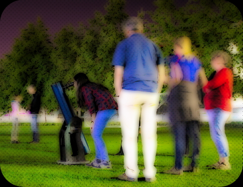

Caltech Astro Open Nights
 During the semester, the Cahill building at Caltech is host to a series of free lectures on Friday nights open to the public. Astronomers --- students, postdocs, and faculty --- discuss interesting topics in astronomy. At various times, I've helped out our host, Dr. Cameron Hummels, with these lectures. Check it out.
Astronomy Open Houses

Sidewalk Astronomy
You ever want to just shout at people on the street to tell them how awesome the universe is? Well, every so often, the astronomers at Caltech, organized by Dr. Cameron Hummels, set out on the streets of Pasadena, with telescopes in tow, to give the public a quick chance to see Saturn, Jupiter, wild images of the moon, and much more -- all while they stroll through on a Friday night. So far, I've helped out at a couple events, and it's a ton of fun. Stay tuned for more info!
Caltech/IPAC ♦ Morrisroe Astroscience Building ♦ Mail Code 100-22
770 S. Wilson Ave. ♦ Pasadena, CA ♦ 91125
MR 200 ♦ (626) 395 1855
rpatel@ipac.caltech.edu

Design by TEMPLATED and totally inspired and ripped off from Michael Zingale because I have no website creativity.